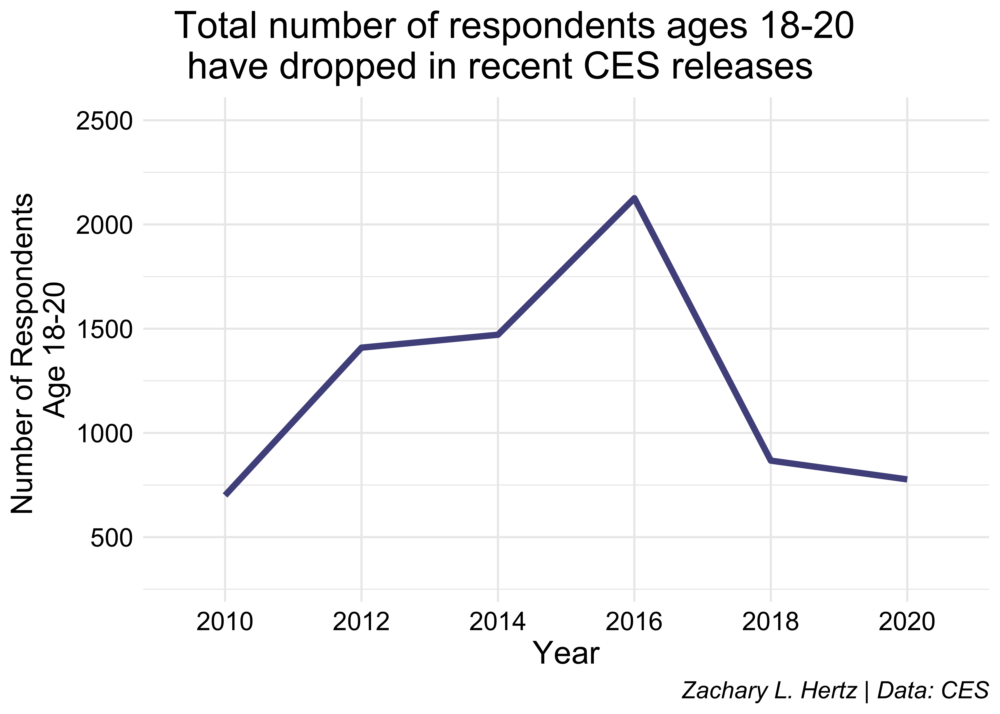
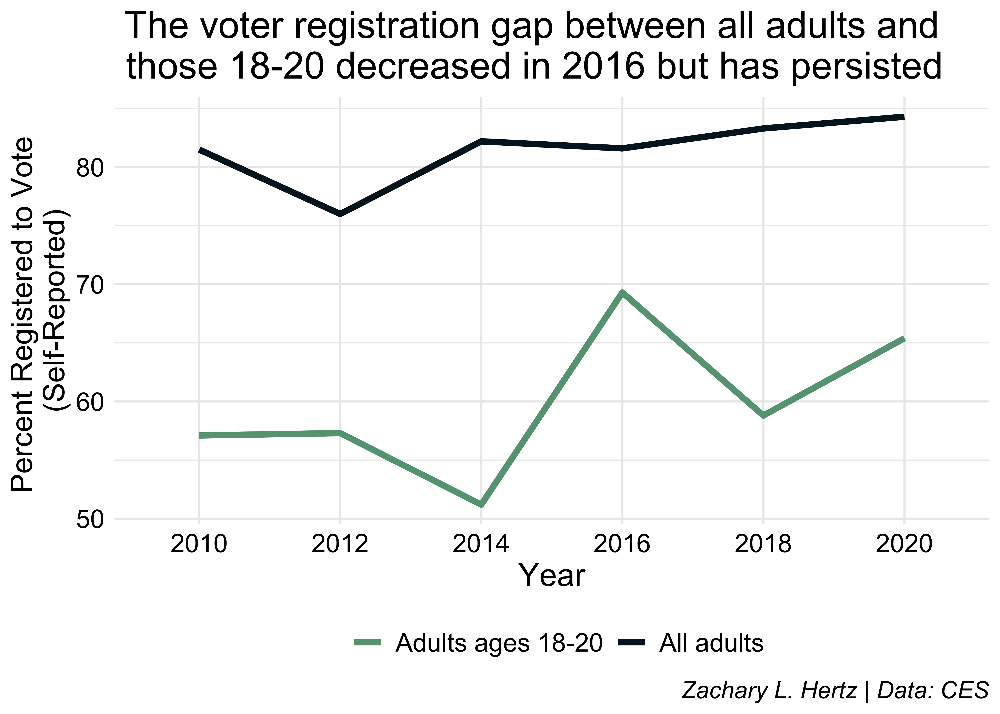

Using the CES to Examine Young Voters
Have age-based turnout gaps persisted?
July 1 marked 50 years since the ratification of the 26th Amendment to the United States Constitution, which legally extended the right to vote to those over the age of 18. Young voters have played a vital – at times, even decisive – role in elections since. But decades after the franchise was extended to 18-, 19-, and 20- year-olds, how does their voting rates compare to American adults overall?
Youth have historically voted at lower rates than older voters and while some evidence suggests these turnout disparities have declined in recent elections they still remain, in part due to inadequate voter registration efforts targeted at the youngest voters and particularly high barriers to voting. As voting may be habit-forming, understanding to what extent these inequities persist among young voters is critical to rectifying them, working towards an evenly engaged electorate, and building lifelong voters.
The Center for Information & Research on Civic Learning and Engagement (CIRCLE) at Tufts University is one of the leading sources of research on young voters. Their research generally defines youth as those under 30, however, a broader group than those 18-20 affected by the 26th Amendment, and their data sources are unfortunately not public. Instead, I turn to the Cooperative Election Study (CES), as the premier large-scale academic survey project aimed at studying the American Electorate. The CES has over 50,000 respondents each year in its representative sample; each wave since 2010 has included over 700 respondents between ages 18 and 20, though this number has dropped in the two most recent waves.

While the CES includes voting data matched to the Catalist LLC voter file, the 2020 validated vote data has not been released. Until then, I use the self-reported voting data from the CES to investigate, and will replicate my analysis when validated voting data from all CES waves are made publicly available. As a result, my findings come with the important caveat that self-reported measures consistently overestimate turnout.
The voter registration gap between youth and older voters remains
When comparing voter registration and voter turnout, it is important to note that presidential and midterm elections should not be directly compared, as voter engagement is higher in presidential elections than midterm elections.
CES data from the past three midterm elections (2010, 2014, and 2018) shows that the gap in voter registration numbers between the 18-20 year-old cohort and all adults has been persistent. In 2010, 81.5 percent of adults said that they were registered to vote where just 57.1 percent of 18-20 year-olds did, a difference of 24.4 percentage points. While the overall percent of adults registered to vote rose slightly to 82.2 percent in 2014, the number of youth who said they were registered to vote dropped to 51.2 percent, widening the voter registration gap to 31 percent. But in 2018 overall voter registration rose to 83.3 percent and youth voter registration rose with it to 58.8 percent, returning the voter registration gap to 24.5 percent.

The past three presidential elections (2012, 2016, and 2020) followed a similar yet opposite trend. 76 percent of all adults were registered to vote in 2012 while 57.3 percent of 18-20 year-olds were, a difference of 18.7 percentage points. In 2016 these numbers jumped noticeably: 81.6 percent of adults and 69.3 percent of 18-20 year-olds were registered to vote, closing the gap to just 12.3 percent. But in 2020, youth voter registration dropped slightly to 65.4 percent while overall voter registration rose to 84.3 percent, bringing the voter registration gap back to 18.9 percent, near its 2012 levels.
The turnout gap in midterm elections has decreased, but remains in presidential elections
CES self-reported vote data shows that the voter turnout gap between 18-20 year-olds and all adults is highest in midterm elections, but has consistently decreased since 2010. 58.9 percent of all adults but just 16 percent of youth reported voting in 2010, a difference of almost 43 percentage points. Self-reported voting increased ten percentage points to 68.8 percent among all adults in 2014 while more than doubling among youth to 35 percent, decreasing the gap to 33.8 percent. By 2018, which saw 72.8 percent of adults report voting, 45 percent of youth ages 18-20 reported voting, bringing the difference in midterm elections to its lowest gap of 27.8 percentage points.

In presidential elections, the gap in self-reported voting between 18-20 year-olds and all adults is smaller, but has not followed a consistent pattern between 2012 and 2020. In 2012, 72.6 percent of adults but just 54 percent of 18-20 year-olds reported voting, a difference of 18.6 percentage points. Self-reported voting jumped in 2016: 77.4 percent of all adults and 60.3 percent of youth said they voted, decreasing the gap to just 17.1 percent. While self-reported voting increased to 78.6 percent among all adults in 2020, however, only 55.4 percent of 18-20 year-olds reported voting, deepening the turnout gap to 23.2 percentage points.
Conclusion
On the 50th anniversary of extending the franchise to Americans between the ages of 18 and 20, CES data shows that turnout gaps between the youngest Americans and all adults remain but may be decreasing. Gains in youth voter turnout have been especially pronounced in midterm elections, which see lower voter turnout than presidential elections, suggesting that while turnout disparities have not been completely eliminated, efforts to engage the youngest voters in the less-engaged midterm congressional elections may have been successful.
These findings are subject to the normal limitations of using survey data to estimate voter turnout. As relying on self-response data often overestimates turnout, I hope to replicate this analysis using the CES validated vote data once the 2020 wave is released.
Citation
@online{lorico_hertz2021,
author = {Lorico Hertz, Zachary},
title = {Using the {CES} to {Examine} {Young} {Voters}},
date = {2021-07-06},
url = {index.qmd/posts/2021-07-06-ces-young-voters/},
langid = {en}
}